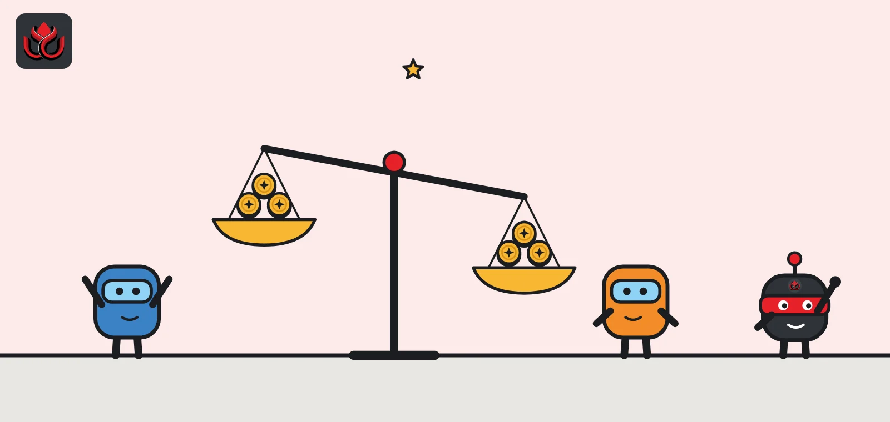
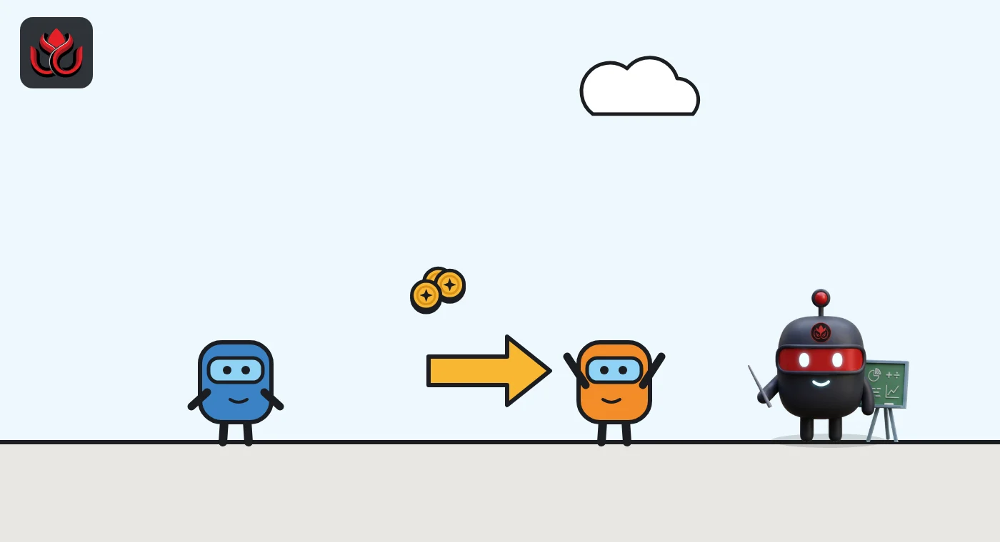
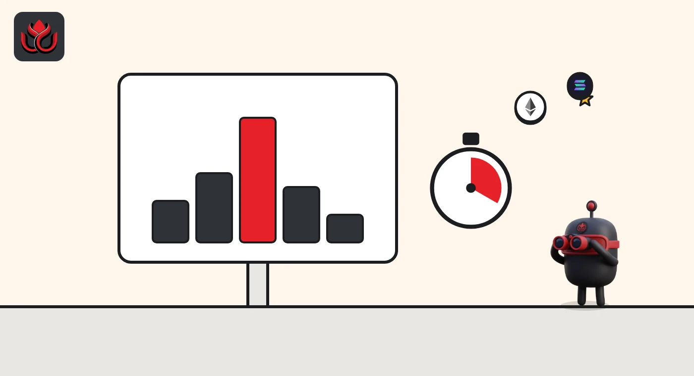

Perpetual futures funding rates explained: how 0.05% can cost 55% a year
A funding rate is a small payment that traders of perpetual futures make to each other to keep the contract's price close to the real market price. When it is positive, longs pay shorts. When it is negative, shorts pay longs.

Key points
- Perpetual futures never expire, so exchanges use funding payments to keep their price near the spot index.
- A positive funding rate means longs pay shorts. A negative rate means shorts pay longs. The exchange does not keep the money.
- On Deribit, funding is based on the gap between the contract's mark price and the index, minus a 0.025% dead zone, and is capped at 0.5% per eight hours for bitcoin.
- Rates are quoted per eight hours, so a figure that looks tiny can add up to a large yearly cost.
 What DeepSea's data shows
What DeepSea's data shows
Funding moves money from the crowded side to the other side, so it helps to know which side is crowded. DeepSea's long/short page showed the perpetual futures traders it tracks 86% long on November 2: $3.35 billion of longs against $543.87 million of shorts, across 150 assets.
Bitcoin was the most balanced of the big markets, with $679.40 million long and $172.48 million short. Ether stood at $1.12 billion long and $74.86 million short. DeepSea shows position sizes, not funding rates, so check an exchange's funding page before drawing conclusions.

Data: DeepSea (desea.io), checked November 2, 2026, 7:55 a.m. ET.
What is a perpetual future?
A futures contract is a bet on the future price of an asset, settled in cash or in the asset on a set date. A perpetual future, often called a perp, is the same idea with no end date. Traders can hold a position for minutes or months.
Deribit, a large crypto derivatives exchange, explained the design when it launched its own perpetual in 2018: the contract does not have a finite term, which is where the name comes from. Perps let traders go long (bet on a rise) or short (bet on a fall), usually with borrowed money, called leverage.
Without an expiry date, nothing forces a perp's price to meet the real market price. Funding is the fix.
What is a funding rate?
A funding rate is a regular payment between the two sides of the market. It is set so that whichever side is pushing the perp away from the spot price pays the other side.
- When the perp trades above the index, funding is positive and longs pay shorts. Being long gets more expensive, which tends to pull the price down.
- When the perp trades below the index, funding is negative and shorts pay longs, which tends to pull the price up.
Deribit's contract specification says it charges no fee on funding, so the payments are zero-sum between traders. One trader's cost is another trader's income.

How is the funding rate calculated?
Each exchange has its own formula. Deribit's is public, so it makes a good example. It starts with two prices: the Deribit index, built from spot prices on several exchanges, and the mark price, which is the index plus a smoothed average of the gap between the perp's order book price and the index.
Step one is the premium rate: the mark price minus the index, divided by the index. Step two applies a dead zone of plus or minus 0.025%. If the premium is inside that band, funding is zero. If it is above, funding equals the premium minus 0.025%. If it is below, funding equals the premium plus 0.025%.
Step three is a cap. On Deribit's BTC perpetual, funding cannot go above 0.5% or below minus 0.5% per eight-hour period. For ETH the cap is 1%.
Deribit's worked funding example (1 BTC long)
%
How often is funding paid?
Many exchanges settle funding at fixed times, often every eight hours. Deribit's 2018 launch note said such fixed payments can cause price bumps around payment time, and that its version instead makes tiny payments on a microsecond basis.
Its current specification says funding is calculated every millisecond. The payment for any stretch of time is the funding rate, times the position size, times the fraction of an eight-hour period the position was held. Deribit's own example: with funding at 0.05%, a 1 BTC long held for eight hours pays 0.0005 BTC to shorts. Deribit also runs a daily settlement at 3 a.m. ET (4 a.m. ET during daylight saving time), when session profit and loss on futures and perpetuals is credited or debited to the cash balance.
Other venues use different schedules and caps. Always read the contract page of the exchange you are looking at.

How do you read a funding rate number?
Funding rates are tiny percentages, so it helps to translate them. Most dashboards quote the rate per eight hours. Multiply by three for a daily figure, and by 365 for a rough yearly one.
- A rate of 0.01% per eight hours is 0.03% a day, or about 11% a year.
- A rate of 0.05% per eight hours is 0.15% a day, or about 55% a year.
- A negative rate of minus 0.02% per eight hours means shorts pay about 0.06% a day to longs.
Deribit's specification also shows how small each slice is. With funding at 0.05%, a 1 BTC long held for one minute pays about 0.000001041667 BTC. Held for eight hours, the same position pays 0.0005 BTC, which Deribit's example puts at about $5 when bitcoin is at $10,000.
The cap tells you the worst case. On Deribit's BTC perpetual, funding cannot exceed 0.5% per eight hours, so the most a position can pay in a day is 1.5% of its size. On ETH, with a 1% cap, it is 3%.
Two more points help. First, funding is paid on the full position size, not on the margin. A trader using 10x leverage pays funding on 10 times their deposit, so the cost as a share of their own money is 10 times larger. Second, a zero rate is common on Deribit when the perp trades close to the index, because of the 0.025% dead zone.
What does a high or negative funding rate tell you?
Funding is a quick read on positioning. A strongly positive rate means traders are paying up to stay long, a sign of crowded bullish bets. A negative rate means shorts are paying, a sign that bearish bets are crowded or that traders are hedging.
It is a clue, not a forecast. Crowded positions can unwind sharply in either direction, often through forced selling or buying known as liquidations. Funding also does not show how big the positions are. Open interest, the total value of open contracts, fills that gap.
For a recent example of how fast positioning can swing, see LC Insight's report on big Hyperliquid traders flipping from long to net short and back.
What are the risks for traders?
Funding is a running cost that is easy to underestimate. As the math above shows, 0.05% per eight hours held for a year is roughly 55% of the position's value, before any price move.
The rate also changes constantly, so a trade that earns funding today can cost money tomorrow. And because perps are usually traded with leverage, small price moves can matter more than funding. Bitcoin traded at about $77,928 on CoinMarketCap as of November 2, 2026; a 1% move from there is about $779, far bigger than a typical day of funding.
LC Insight analysis
This section is our reading of the facts above, not a statement of fact.
- We think funding is one of the most useful free signals in crypto, but only next to open interest and price. A high rate on small open interest means little; a high rate on record open interest is a warning sign.
- The real risk for newcomers is the compounding cost. A rate that looks like a rounding error can quietly take a large share of a long-held leveraged position.
What's next
- Funding turning sharply positive after a rally, a sign of crowded longs
- Persistently negative funding during sell-offs
- Changes to exchange caps and formulas in contract specification updates
Frequently asked questions
Does the exchange keep the funding payment?
Not on Deribit, which says it charges no fee on funding. The money passes from one group of traders to the other.
Why is the funding rate sometimes exactly zero?
On Deribit, any premium within plus or minus 0.025% of the index produces a funding rate of zero, because of the dead zone in the formula.
Is funding paid on spot holdings?
No. Funding applies only to perpetual futures positions. Holding the coin itself carries no funding cost.
Are funding rates the same on every exchange?
No. Each venue sets its own formula, cap and payment schedule, so the same coin can show different rates at the same moment.
Disclaimer. This article is based on public information and the sources listed below as of the update time shown. It is for information only and is not investment, legal or tax advice. Figures may change as companies and authorities publish new data.